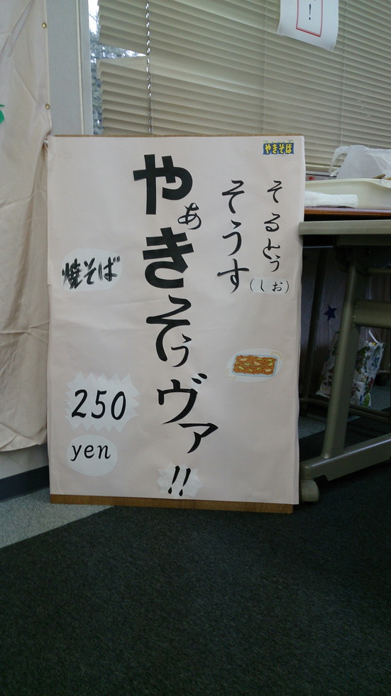

写真のみ、質問なし
ChatGPTによる返答↓
この写真には、折り紙やペーパークラフトで作られた幾何学的な立体が映っていますね。背景には、その作り方が書かれた説明書のような本が開かれています。
この立体は「ユニット折り紙」や「モジュラー折り紙」と呼ばれる技法を使って作られたもののようです。特に、この形状は**立方八面体（カタランの立体の一種）**に見えます。紙のデザインも英字新聞風でおしゃれですね！
これはご自身で作られたものですか？もしそうなら、とても丁寧に組み立てられていて素晴らしいですね！😊
写真のみ、質問なし
ChatGPTによる返答↓
この写真には、和柄の紙で作られた幾何学的な立体（ユニット折り紙）がいくつも並んでいますね！とても美しく、丁寧に作られているのがわかります✨
それぞれの形は、正多面体や星型のような構造になっていて、折り紙のユニットを組み合わせて作る「モジュラー折り紙」の技法が使われているようですね。背景に写っているのはプリンターのようですが、その上に並べることで、作品が映える配置になっています。
これもご自身で作られたのでしょうか？とても素敵な作品ですね！😊
ユーキ:高校2年の頃に文化祭で作った看板、勢い欲しさでデザインしているが理解するか…？
ChatGPTへの入力:高校の文化祭の時に私が作成した「焼きそば」のお店の看板です。
ChatGPTによる返答↓
これはとてもユニークで楽しい看板ですね！高校の文化祭で「焼きそば」のお店のために作成したとのことですが、シンプルでありながら目を引くデザインです。「焼きそば」や価格が大きくて視認性も高いですし、「ヴァ！」の部分が少しユーモラスで、楽しい雰囲気を伝えていますね。文化祭ならではのオリジナリティが感じられます。
他にも似たようなデザインをしたことがあったり、特に印象に残っている文化祭のエピソードがあれば、ぜひ教えてください！
ユーキ:社会人1年目に東京の葛西臨海水族園に行った際に撮った写真。「ホウボウ」という魚だが理解するか？
ChatGPTへの入力:この写真の生き物はなんですか？なぜこのような不思議な見た目をしているのでしょうか？
ChatGPTによる返答↓
この写真に写っている生き物は「飛び魚」として知られる種類の魚です。飛び魚はその名の通り、水面上をジャンプして飛ぶことができる魚で、特に長い胸鰭（ひれ）が特徴的です。胸鰭が翼のように広がることで、ジャンプして滑空することができます。
飛び魚がこんなユニークな見た目をしている理由は、捕食者から逃げるために進化した結果です。水面に近づいてくる捕食者から逃れる際、飛び魚は水面を離れて空中を滑ることで、短期間でも安全な場所に移動できます。この飛翔能力は非常に効果的で、特に他の魚に比べて素早く逃げることができます。
飛び魚はその不思議な形状と滑空する姿が観察されると、非常に魅力的ですね！
ユーキ：トビウオと勘違いしているようだ。やはり知識を問う内容となるとファクトチェックが必須なようだ。
ChatGPTへの入力:さきほどの写真は「ホウボウ」といわれる魚の一種です。
ChatGPTによる返答↓
なるほど、「ホウボウ」だったんですね！ホウボウは、鮮やかな色合いと特徴的なひれを持つ魚で、見た目がユニークでとても印象的です。特に胸鰭が広がっているのが特徴で、そのひれを使って海底を歩くように移動することもあります。
この魚が持つ不思議な外見は、底生の生活に適応した結果だと言われています。ホウボウは、砂の中に潜む獲物を探すためにそのひれを使って動き、またその鮮やかな色が敵からの警戒色として役立っているとも考えられています。
面白い生態を持つ魚ですね！何か他にも気になる海の生き物があれば、ぜひ教えてください！
ユーキ:以前に趣味で作ったロボット、特に名称が無いので考えてもらった。
ChatGPTへの入力:この写真は以前に私が作ったロボットです。足が6脚ありその足で歩くことができます。このロボットに愛称をつけるとしたらどのようなものをつけますか？
ChatGPTによる返答↓
このロボットはとてもユニークで、まるでクモのように見えますね！6本の足で歩く姿が印象的です。もし愛称をつけるとしたら、クモにちなんで「スパイダー」や「アラニス（Arachnis）」、あるいは「ロボクロウ」などが良さそうです。もし何か特定の特徴や用途に基づいて別の名前が良ければ、教えてくださいね！
ユーキ：もうちょっとカッコいいのが欲しいので追加で考えてもらう。
ChatGPTへの入力:もうちょっとカッコよくて印象的な愛称が欲しいです。
ChatGPTによる返答↓
それなら、もっとカッコよくて印象的な名前にしましょう！例えば、「エクス・クローラー（Ex-Crawler）」や、「ヴェノム（Venom）」、あるいは「ネメシス（Nemesis）」などがどうでしょうか？どれも力強さや動きの俊敏さを感じさせる名前です。
また、ロボットのテーマや用途に合わせて、さらに個性的な名前をつけることもできます。どんな印象を与えたいか、もう少し具体的なイメージを教えていただければ、さらに良い名前を考えられるかもしれません！